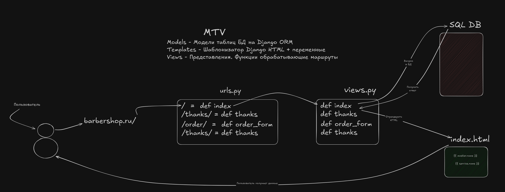

В Django приложения - это модульные компоненты, которые инкапсулируют определенную функциональность проекта. Это ключевая архитектурная концепция, позволяющая создавать масштабируемые и поддерживаемые веб-приложения. Каждое приложение должно решать одну конкретную задачу, например: аутентификацию пользователей, работу с блогом или обработку заказов.
Приложения в Django следуют принципу "одна ответственность" - они должны быть максимально независимыми и самодостаточными. Это позволяет легко переиспользовать код между проектами и упрощает командную разработку. Например, в нашем проекте core отвечает за основную бизнес-логику барбершопа - запись клиентов, управление мастерами и расписанием.
[!info]
Основные принципы приложений
- Изолированность: Приложение должно содержать все необходимое для своей работы - модели, представления, шаблоны, статические файлы
- Повторное использование: Хорошее приложение можно перенести в другой проект с минимальными изменениями
- Специализация: Каждое приложение решает одну конкретную задачу (например, только аутентификацию или только блог)
- Низкая связность: Приложения должны минимально зависеть друг от друга
При разработке Django-приложений важно следовать этим принципам с самого начала проекта. Например, если мы создаем приложение для управления записями в барбершопе, оно должно содержать только логику, связанную с этой задачей - модели клиентов, мастеров и записей, соответствующие представления и шаблоны. Вся логика аутентификации пользователей должна быть вынесена в отдельное приложение, например users.
[!warning]
Типичные ошибки
- Создание одного "монолитного" приложения на весь проект
- Слишком сильная связность между приложениями
- Нарушение принципа единственной ответственности
Создание нового приложения в Django - это первый шаг после настройки проекта. Для этого используется команда startapp, которая генерирует базовую структуру приложения. В нашем случае мы создаем приложение core:
poetry run python manage.py startapp core
Эта команда создает папку core со стандартной структурой файлов Django-приложения. Важно понимать, что просто создать приложение недостаточно - его нужно явно подключить в настройках проекта.
После создания приложения его необходимо добавить в INSTALLED_APPS в файле настроек settings.py:
# barbershop/settings.py
INSTALLED_APPS = [
'django.contrib.admin',
'django.contrib.auth',
'django.contrib.contenttypes',
'django.contrib.sessions',
'django.contrib.messages',
'django.contrib.staticfiles',
'core', # Добавляем наше приложение после стандартных
]
Подключение приложения в INSTALLED_APPS делает его частью Django-проекта и позволяет использовать все возможности фреймворка - от миграций базы данных до работы с шаблонами. Важно отметить, что Django автоматически ищет определенные файлы в подключенных приложениях, например models.py для регистрации моделей или admin.py для настройки административного интерфейса.
[!warning]
Важные моменты подключения
- Имя приложения в
INSTALLED_APPSдолжно точно соответствовать имени папки приложения и модуля (в нашем случаеcore)- Порядок приложений может влиять на переопределение шаблонов и статических файлов
- Новые приложения лучше добавлять после стандартных приложений Django
При создании приложения вручную важно точно воспроизвести стандартную структуру Django. Например, файл apps.py должен содержать класс конфигурации приложения, который наследуется от django.apps.AppConfig. Этот класс позволяет задавать метаданные приложения, такие как его имя и путь, что особенно важно при использовании нестандартных путей к приложению.
[!info]
Альтернативные способы создания приложений
- Можно создать приложение вручную, скопировав структуру
- Некоторые IDE (PyCharm) имеют встроенные инструменты для создания Django-приложений
- Существуют шаблоны и cookiecutters для генерации приложений с дополнительной структурой
Core 🗂️После выполнения команды startapp core создается стандартная структура Django-приложения. Давайте подробно рассмотрим назначение каждого файла и директории:
core/
├── __init__.py # Пустой файл, указывающий что это Python-пакет
├── admin.py # Регистрация моделей для админ-панели Django
├── apps.py # Конфигурация приложения (настройки, название)
├── migrations/ # Хранит миграции базы данных (пока пустая)
├── models.py # Определение моделей данных приложения
├── tests.py # Модуль для написания unit-тестов
└── views.py # View-функции (обработчики HTTP-запросов)
Каждый файл в структуре приложения имеет четкое назначение. Например, models.py определяет структуру данных, которые будут храниться в базе данных. Django автоматически создает соответствующие таблицы на основе этих моделей. Файл views.py содержит функции или классы, которые обрабатывают HTTP-запросы и возвращают HTTP-ответы. Эти компоненты работают вместе, следуя паттерну MTV, который мы рассмотрим далее.
[!info]
Назначение ключевых файлов
models.py- сердце приложения, здесь определяются модели данныхviews.py- содержит логику обработки запросовadmin.py- настройки интерфейса администратораmigrations/- автоматически генерируемые файлы миграций
Каждый из этих файлов играет важную роль в архитектуре приложения. Например, models.py определяет структуру данных, которые будут храниться в базе, а views.py содержит функции, которые обрабатывают HTTP-запросы и возвращают ответы.
[!warning]
Особенности структуры
- Не удаляйте и не переименовывайте стандартные файлы
migrations/должна оставаться пустой до создания моделей__init__.pyобязателен для работы приложения как Python-пакета
MTV (Model-Template-View) - это архитектурный паттерн, используемый в Django. На изображении ниже показано взаимодействие компонентов:

Основные компоненты:
Отличие от классического MVC в том, что в Django "View" соответствует "Controller" в MVC, а "Template" - "View".
Маршрут (path) связывает URL с функцией-обработчиком (view). В нашем примере:
В Django маршруты определяют, какая функция или класс будет обрабатывать запрос по определенному URL. В нашем примере мы создаем простой обработчик для главной страницы. Функция landing принимает объект запроса request и возвращает HTTP-ответ с простым HTML-заголовком. Это минимальный пример view-функции в Django.
# core/views.py
from django.shortcuts import HttpResponse
def landing(request):
"""Обработчик главной страницы"""
return HttpResponse("<h1>Главная страница</h1>")
После создания view-функции необходимо связать ее с конкретным URL. Это делается в файле urls.py основного проекта. Мы импортируем нашу функцию landing из приложения core и добавляем ее в список urlpatterns. Пустая строка в path("", ...) означает корневой URL сайта. Параметр name позволяет ссылаться на этот маршрут по имени в других частях проекта.
# barbershop/urls.py
from django.contrib import admin
from django.urls import path
from core.views import landing
urlpatterns = [
path("admin/", admin.site.urls), # Админ-панель
path("", landing, name="home"), # Главная страница
]
Таким образом, мы создали первый работающий маршрут в Django-приложении. При переходе на корневой URL сайта будет вызываться функция landing, которая вернет простой HTML-заголовок. Это базовая, но важная концепция, на которой строится вся маршрутизация в Django.
sequenceDiagram
participant Браузер
participant URLconf
participant View
participant Model
participant Template
Браузер->>URLconf: HTTP-запрос (GET /)
URLconf->>View: Определяет соответствующий view
View->>Model: Запрашивает данные (при необходимости)
Model-->>View: Возвращает данные
View->>Template: Рендерит шаблон с данными
Template-->>View: Возвращает HTML
View-->>Браузер: HTTP-ответ с HTML
В следующих уроках мы рассмотрим более сложные примеры с параметрами URL и различными типами ответов.
[!info]
Основные понятия
- View: Функция, принимающая запрос (
request) и возвращающая ответ- Path: Связывает URL с view-функцией
- HTTP Response: Ответ сервера клиенту (в нашем случае HTML)
```